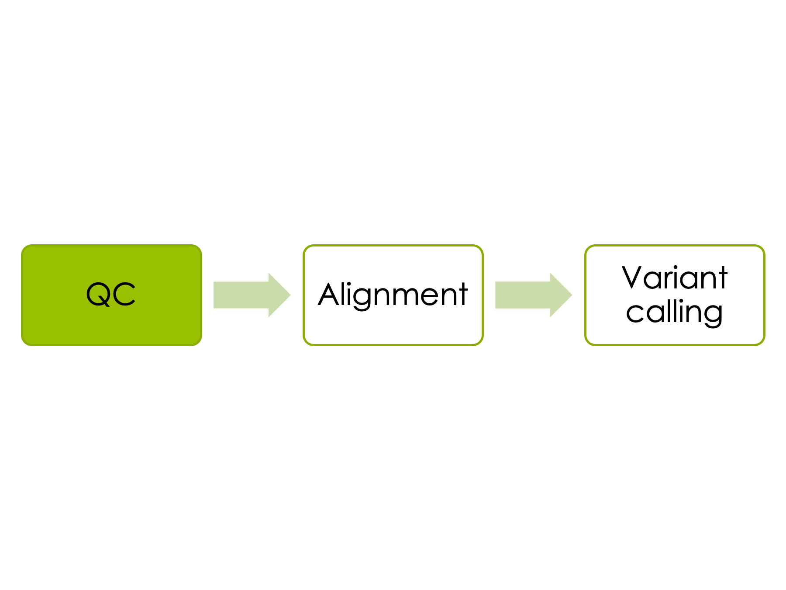
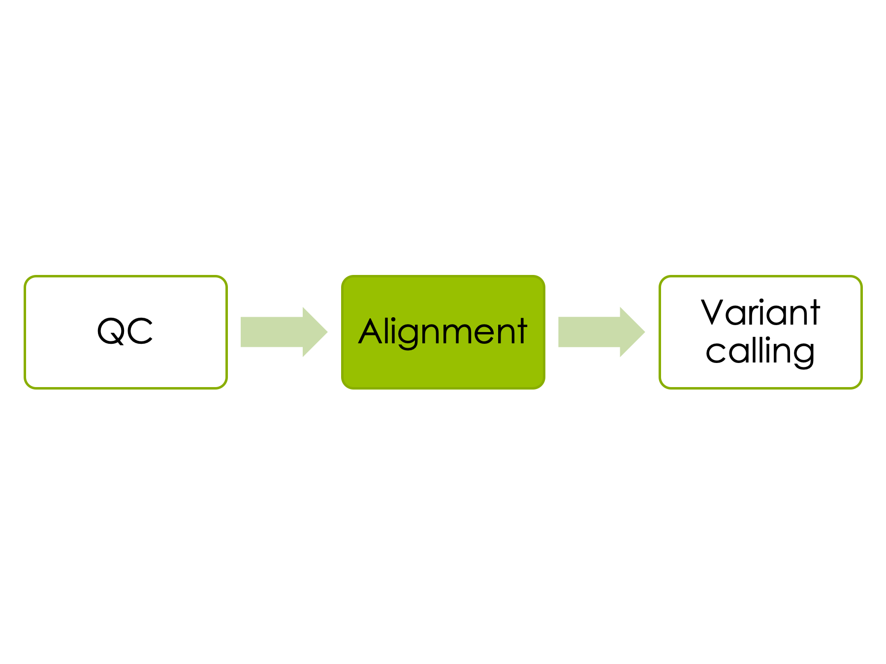
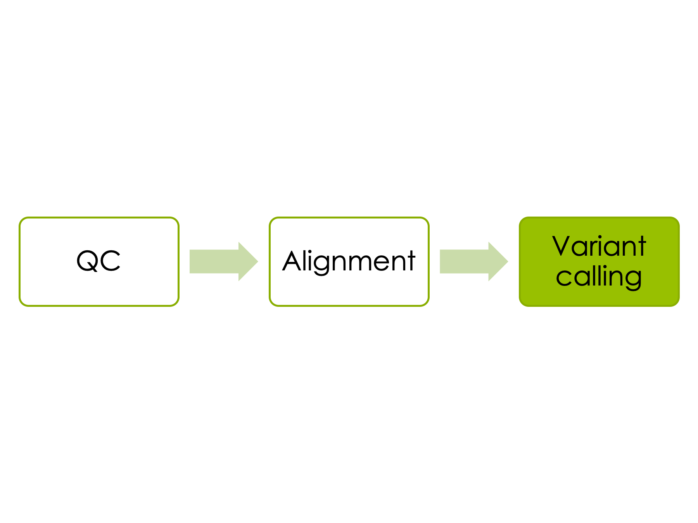
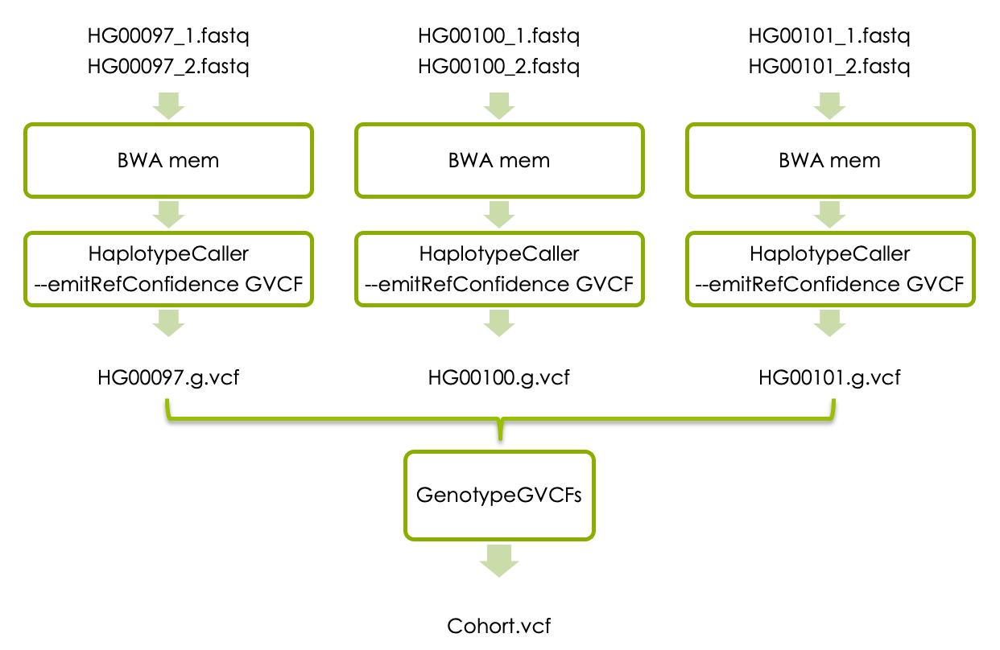
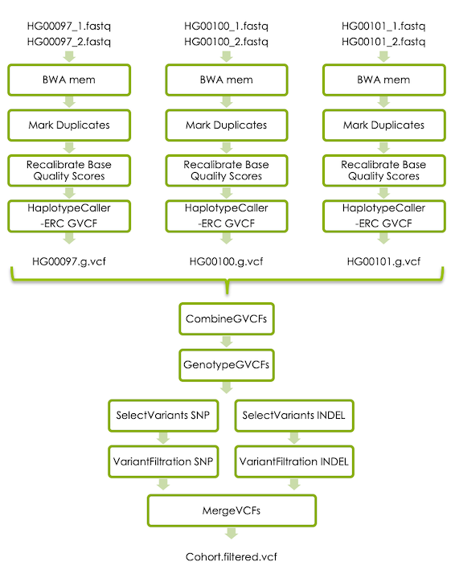

Short Variant Calling
NGS workflow
1 Introduction
Whole genome sequencing (WGS) is a comprehensive method for analyzing entire genomes. This workshop will take you through the process of calling germline short variants (SNVs and INDELs) in WGS data from three human samples.
- The first part of the workshop will guide you through a basic variant calling workflow in one sample. The aims are to get familiar with the bam and vcf file formats, and learn how to interpret the results of variant calling in Integrative Genomics Viewer (IGV).
- If you have time, the next part of the workshop will show you how to perform joint variant calling in three samples. The aims are that after this section you should be able to explain the differences betwen the g.vcf and vcf file formats, and be able to combine individual linux commands into an SBATCH script.
- If you have time, the last part of the workshop will take you through the GATK best practises for germline short variant detection in three samples. The aim here is that you should learn how to use GATK’s documentatiton so that you can analyze your own samples in the future.
- In paths, please replace
<username>with your actual UPPMAX username. - In commands, please replace
<parameter>with the correct parameter, for example your input file name, output file name, directory name, etc. - Copying and pasting commands from the exercise to terminal can result in formatting errors.
- Use tab completion.
- A line starting with
#is a comment - Running a command without parameters will often return a help message on how to run the command.
- After a command is completed, please check that the desired output file was generated and that it has a reasonable size (use
ls -l). - A common mistake is to attempt to load input files that do not exist, or create output files where you dont have permission to write.
- Use output file names that describes what was done in the command.
- If you change the node you are working on you will need to reload the tool modules.
- Google errors, someone in the world has run into EXACTLY the same problem you had and asked about it on a forum somewhere.
2 Data description
2.1 Samples
The 1000 Genomes Project was the first project to sequence the entire genomes of a large number of people, to provide a comprehensive resource on human genetic variation. Data from the 1000 Genomes Project available through freely accessible public databases, and in this workshop we will use 3 samples from the low converage phase of the 1000 Genomes project.
| Sample | Population | Sequencing technology |
|---|---|---|
| HG00097 | British in England and Scotland | Low coverage WGS |
| HG00100 | British in England and Scotland | Low coverage WGS |
| HG0010q | British in England and Scotland | Low coverage WGS |
2.2 Genomic region
The LCT gene on chromosome 2 encodes the lactase protein, which is responsible for the metabolism of lactose in mammals. Most mammals can not digest lactose as adults, but some humans tolerate lactose and can use it as energy source also in adulthood. Genetic variants upstream of the LCT gene control how lactose is tolerated in adults. The variant rs4988235, located at at position chr2:136608646 in the HG19 reference assembly, has been shown to lead to lactose persistence.
Here we will use sequencing data for the region chr2:136545000-136617000 in the 3 samples listed above to illustrate the process of variant detection in NGS data.
To learn more about the genetic bases for lactose tolerance please read the first three pages of Lactose intolerance: diagnosis, genetic, and clinical factors by Mattar et al. The variant (rs4988235) is here referred to as LCT-13910C>T.
2.3 Data folder on Uppmax
All input data for this exercise is located in this folder on Rackham:
/sw/courses/ngsintro/reseq/dataThe fastq files are located in this folder:
/sw/courses/ngsintro/reseq/data/fastqReference files, such as the reference genome in fasta format, are located in this folder:
/sw/courses/ngsintro/reseq/data/ref3 Preparations
3.1 Local workspace
The majority of the analyses in this workshop will be done on Uppmax, but you will copy some of the resulting files to your laptop. Therefore, please start by creating a folder for this workshop on your laptop. It is up to you where you want to put this, but it can for example be a folder called ngsworkflow on Desktop. You need to have write permission in this folder. The folder you create here will be referred to as local workspace throughout this workshop.
3.2 UPPMAX
Please connect to the Rackham cluster on UPPMAX using `ssh:
$ ssh -Y username@rackham.uppmax.uu.se3.2.1 Workspace on Uppmax
During this lab you should work in your folder under the course’s nobackup folder, just like you have done during the previous labs. Start by creating a workspace for this exercise in your folder, and then move into it. This folder will be referred to as your uppmax workspace throughout this workshop.
mkdir /proj/g2019031/nobackup/<username>/ngsworkflow
cd /proj/g2019031/nobackup/<username>/ngsworkflow3.2.2 Symbolic links to data
The raw data files are located in the Data folder described above. In stead of copying the files to your workspace you should create symbolic links (soft-links) to them. Soft-linking files and folders allows you to work with them as if they were in your current directory, but without multiplying them.
Create a symbolic link to the reference genome in your workspace:
ln -s /sw/courses/ngsintro/reseq/data/ref/human_g1k_v37_chr2.fastaDo the same with the fastq files:
ln -s /sw/courses/ngsintro/reseq/data/fastq/HG00097_1.fq
ln -s /sw/courses/ngsintro/reseq/data/fastq/HG00097_2.fq
ln -s /sw/courses/ngsintro/reseq/data/fastq/HG00100_1.fq
ln -s /sw/courses/ngsintro/reseq/data/fastq/HG00100_2.fq
ln -s /sw/courses/ngsintro/reseq/data/fastq/HG00101_1.fq
ln -s /sw/courses/ngsintro/reseq/data/fastq/HG00101_2.fq3.2.3 Book a node
When you login to Rackham you enter the login node, which is not intended for compute intensive tasks. To be able to run analyses directly in the terminal you should therefore book a compute node (or in this case just one core of a node). Make sure you only do this once each day because we have reserved one core per student for the course.
Use this reservation on day 1 of variant-calling:
salloc -A g2019031 -t 04:00:00 -p core -n 1 --no-shell --reservation=g2019031_29 &Use this reservation on day 2 of variant-calling:
salloc -A g2019031 -t 04:00:00 -p core -n 1 --no-shell --reservation=g2019031_30 &Once your job allocation has been granted (should not take long) you can connect to the node using ssh. To find out the name of your node, use:
squeue -u <username>The node name is found under nodelist header, you should only see one. Connect to that node:
ssh -Y <nodename>3.2.4 Accessing programs
We will use several programs that are installed in the module system on Uppmax. These modules needs to be loaded every time you login to Rackham, or when you connect to a new compute node.
First load the bioinfo-tools module:
module load bioinfo-toolsThis makes it possible to load the individual programs:
module load FastQC/0.11.8
module load bwa/0.7.17
module load samtools/1.10
module load picard/2.20.4
module load GATK/4.1.4.1You don’t HAVE to specify version number when you load a tool, but it is recommended for reproducability if you want to rerun the exact same analyses later. Picard and GATK are java programs, which means that we need the path to the program file, therefore UPPMAX sets a variable when you load these modules ($GATK_HOME or $PICARD_HOME).
3.3 Index the genome
Tools that compare short reads with a large reference genome needs an index of the reference genome to allow efficient random access to it. Before you can begin analysing the samples you therefore need to create index files for each tool.
Generate BWA index files:
bwa index -a bwtsw human_g1k_v37_chr2.fastaCheck to see that several new files have been created using ls -l.
Generate a Samtool index:
samtools faidx human_g1k_v37_chr2.fastaCheck to see what file(s) were created using ls -lrt.
Generate a sequence dictionary for Picard:
java -Xmx7g -jar $PICARD_HOME/picard.jar CreateSequenceDictionary R=human_g1k_v37_chr2.fasta O=human_g1k_v37_chr2.dictHere you will get a warning about upcoming command line syntax changes for Picard, but you can ignore them.
Again, check that the last command generated a new index file using ls -lrt
4 Variant calling in one sample
Now lets start the main part of the workshop, which will guide you through a basic variant calling workflow in one sample.
4.1 Quality control

4.1.1 FastQC
You will first use FastQC to check the qualiy scores of the reads in the fastq files. The output is a .html document that shows quality scores along the reads, and other information.
Start with creating a folder where the output from FastQC will be stored:
mkdir fastqc Then run FastQC on the HG00097 fastq files, and direct the output to your FastQC folder:
fastqc -q HG00097_1.fq HG00097_2.fq -o fastqc4.1.2 Dowload data to laptop
You should now download the .html files generated by FastQC using scp, and look at them using a web-browser on your laptop. Open a new terminal and navigate to your local workspace. Do not log in to UPPMAX. Copy the .html files generated above with this command:
scp <username>@rackham.uppmax.uu.se:/proj/g2019031/nobackup/<username>/ngsworkflow/fastqc/*.html .Please replace <username> with your uppmax user name.
Check that the files are now present in the local workspace using ls -lrt.
Then open the two html files that you just dowloaded in a web browser.
4.1.3 Questions
- Look at the section “Sequence Length Distribution”. How long are the reads?
- Look at the “per base sequence quality”. How many bases in the reads have a median phred-score above 28?
- Are the quality scores higher for the first strand reads or the second strand reads?
4.2 Aligning reads

4.2.1 BWA mem
In the Uppmax workspace you should now use BWA mem to align the reads to the reference genome.
At the same time you should add something called read groups to the reads in the fastq files. Read groups allow us to trace various technical features, such as which flowcell was used to generate the reads, and this is needed in order to perform variant calling with HaplotypeCaller. For a detailed description of read groups, please read this article at GATK-forum. The samples in this workshop come from the 1000 Genomes project, and we don’t know the details of how these reads were generated. Let’s assume that each fastq file was generated from one library preparation (called libraryx), derived from one biological sample (called HG00097), that was run on one lane of a flowcell (called lanex_flowcellx) in the Illumina machine, and create a readgroup with id readgroupx that contains this information.
The output from BWA should be parsed to samtools sort, which sorts the sam file according to chromosome position and then converts the sam file to the binary bam format. This saves space since no intermediary sam file is created.
Please use this command for all of this:
bwa mem -R "@RG\\tID:readgroupx\\tPU:lanex_flowcellx\\tSM:HG00097\\tLB:libraryx\\tPL:illumina" -t 1 human_g1k_v37_chr2.fasta HG00097_1.fq HG00097_2.fq | samtools sort > HG00097.bamWhere -t 1 is the number of threads, which should be equal to the number of cores you booked. If you would have analysed the entire genome more threads would have been necessary.
You have to use a file redirect > for the output, otherwise it will be written to stdout (your screen).
Please check that the expected output file was generated and that it has content using ls -lrt.
Next you need to index the output bam file so that programs can randomly access the sorted data without reading the whole file. This command creates an index file with the same name as the input bam file, except with a .bai extension:
samtools index HG00097.bamPlease check what output file was generated this time.
4.2.2 Check bam with samtools
The bam file is binary so we can not read it, but we can view it with samtools view.
The header section of the bam file can be viewed separatedly with the -H flag:
samtools view -H HG00097.bam To look at the reads in the bam file just use samtools view without the -H. This will display the entire bam file whcih is quite large, so if you just want to look at the first 5 lines (for example) you can combine samtools view with head:
samtools view HG00097.bam | head -n 5 For help with interpretign the bam file, please look at the sam/bam format definition at Sequence Alignment/Map Format Specification.
4.2.3 Questions
- How is your bam file sorted and what does it mean?
- What is encoded in the @SQ tag, and what do “SN:2” and “LN:243199373” mean?
- What is encoded in the @RG tag?
4.2.4 Check bam in IGV
Install IGV
Integrative Genomics Viewer (IGV) provides an interactive visualisation of the reads in a bam file. Here we will show you how to run IGV on your laptop. If you have not used IGV on your laptop before, plase go to the IGV download page, and follow the instructions to dowload it. It will prompt you to fill in some information and agree to license. Launch the viewer through webstart. The 1.2 Gb version should be sufficient for our data.
Dowload the bam file
You also need to download the bam file to your laptop.
Navigate to your local workspace, but do not log in to UPPMAX. Copy the .bam file you just generated with this command:
scp <username>@rackham.uppmax.uu.se:/proj/g2019031/nobackup/<username>/ngsworkflow/HG00097.bam .Check that the files are now present in your local workspace using ls -lrt.
Look at the bam file in IGV
* In IGV, go to the popup menu in the upper left and set it to Human hg19.
* In the Tools menu, select Run igvtools. Choose the command Count and then use the Browse button next to the Input File line to select the bam file (not the bai) that you just downloaded. It will autofill the output file. Hit the Run button. This generates a .tdf file that allows you to see the coverage value for our bam file even at zoomed out views. Close the igvtools window.
* In the File menu, select `Load from File and select your BAMs (not the .bai or the .tdf), which should appear in the tracks window. You will have to zoom in before you can see any reads. You can either select a region by click and drag, or by typing a region (chr:from-to) or gene name in the text box at the top.
4.2.5 Questions
- What is the read length?
- How can you estimate the coverage in IGV?
- Is the coverage evenly distributed across the genome?
4.3 Variant Calling

4.3.1 HaplotypeCaller
Now we will detect short variants in the bam file using GATK’s HaplotypeCaller. Go to your uppmax workspace and run:
gatk --java-options -Xmx7g HaplotypeCaller -R human_g1k_v37_chr2.fasta -I HG00097.bam -O HG00097.vcf Check what new files were generated with ls -lrt.
4.3.2 Explore the vcf file
Now you have your first vcf file containing the raw variants in the region chr2:136545000-136617000 in sample HG00097. Please look at the vcf file with less and try to understand its structure.
Vcf files contains meta-information lines starting with ##, a header line starting with #CHROM, and then data lines each containing information about one variant position in the genome. The header line defines the columns of the data lines, and to view the header line you can type this command:
grep '#CHROM' HG00097.vcfThe meta-information lines starting with ##INFO defines how the data in the INFO column is encoded, and the meta-information lines starting with ##FORMAT defines how the data in the FORMAT column is encoded. To view the meta-information lines describing the INFO column please use:
grep '##INFO' HG00097.vcfTo view the meta-information lines describing the FORMAT column please use:
grep '##FORMAT' HG00097.vcfPlease have a look at The Variant Call Format specification for more information about vcf files.
4.3.3 Questions
- What is the file HG00097.vcf.idx?
- How many meta-information lines does your vcf file contain? The linux command
grep "^##" HG00097.vcf | wcextracts all lines in HG00097.vcf starting with ##, and counts these lines. - How many genetic variants was detected in the sample? The linux command
grep -v "#" filename.txt | wcextracts all lines in HG00097.vcf that don’t start with “#”, and counts these lines.
- How does the header line look in your sample?
- What do the FORMAT column of the data lines tell you?
- What do the HG00097 column of the data lines tell you?
4.3.4 Check vcf in IGV
Download the vcf file and its index to the local workspace on your laptop. Navigate to your local workspace, but do not log in to UPPMAX. Copy the files that you just generated:
scp <username>@rackham.uppmax.uu.se:/proj/g2019031/nobackup/<username>/ngsworkflow/HG00097.vcf* .Please replace <username> with your uppmax user name.
Note that the * in the end of the file name means that you will download all files that start with HG00097.vcf, so you will also dowload the vcf index.
Check that the filex were properly downloaded to your local workspace using ls -lrt.
In IGV, in the File menu, select Load from File and select your vcf file (not the .idx file), which should appear in the tracks window. You will now see all the variants called in HG00097. You can view all variants in the LCT gene by typing the gene name in the search box.
4.3.5 Questions
- The vcf file is displayed on two rows; what is shown in the two rows in this case?
- What does it mean if a variant has two colors in the upper row?
- What colour heterozygout variants have in the second row?
- What does it mean if a variant is coloured in tourquise in the second row?
5 Variant calling in cohort
If you have time, you can now try joint variant calling in all three samples. Each sample has to be processed with BWA mem as above, and then with HaplotypeCaller with the flag -ERC to generate sample specific g.vcf files. The individual g.vcf fiels will subsequenctly be combined with GATK’s CombineGVCFs, and translated into vcf format with GATK’s GenotypeGVCFs. The workflow below shows how the three samples should be processed and combined.

You can run all commands one by one in the terminal as you did in the first step of the workshop. However, since some steps needs to be repeated for all samples, this is a good opportunity to learn how to write a simple SBATCH script and run all steps automatically. If you are interested in this, please see the SBATCH script section below.
5.1 BWA mem
Run BWA mem and HaplotypeCaller for all three samples in the data set. BWA mem should be run exaclty as above but you need to replace the sample name in the above command with the new sample names.
5.2 Generate g.vcf files
HaplotypeCaller should also be run for all three samples, but this time the output for each sample needs to be in g.vcf format. This is accompliched with a small change in the HaploteypCaller command:
gatk --java-options -Xmx7g HaplotypeCaller -R human_g1k_v37_chr2.fasta -ERC GVCF -I <sample.bam -O <sample>.g.vcf Please replace
5.3 Joint genotyping
Once you have the g.vcf files for all samples you should perform joint genotype calling. To do this you first need to combine all individual .g.vcf files to one file using CombineGVCFs:
gatk --java-options -Xmx7g CombineGVCFs -R human_g1k_v37_chr2.fasta -V <sample1>.g.vcf -V <sample2>.g.vcf -V <sample3>.g.vcf -O cohort.g.vcfPlease replace <sample1>, <sample2>, <sample3> with the real sample names.
Then run GATK’s GenoteypeGVC to generate a vcf file:
gatk --java-options -Xmx7g GenotypeGVCFs -R human_g1k_v37_chr2.fasta -V cohort.g.vcf -O cohort.vcf5.4 SBATCH script
This section is for those of you who want to learn how to run analyses automatically in bash scripts.
To learn more about SLURM and SBATCH scripts please look the SLURM user guide on Uppmax website.
Below is a skeleton script that can be used as a templeate. Please modify it to run all the steps in part two of this workshop. You might find it helpful to try each step for one sample in the interactive terminal, so that you know that a particular command is working, before you incorporate it in the script.
#!/bin/bash
#SBATCH -A g2019031
#SBATCH -p core
#SBATCH -n 1
#SBATCH -t 1:00:00
#SBATCH -J jointGenotyping
module load bioinfo-tools
module load bwa/0.7.17
module load samtools/1.10
module load GATK/4.1.4.1
## loop through the samples:
for sample in HG00097 HG00100 HG00101;
do
echo "Now analyzing: "$sample
#Fill in the code for running bwa-mem for each sample here
#Fill in the code for samtools index for each sample here
#Fill in the code for HaplotypeCaller for each sample here
done
#Fill in the code for CombineGVCFs for all samples here
#Fill in the code for GenotypeGVCFs herePlease save the sbatch script in your uppmax folder and call it “joint_genotyping.sbatch” or similar. To run the sbatch script in the SLURM queue, use this command:
sbatch joint_genotyping.sbatchIf you have an active node reservation you can run the script as a normal bash script because you are already working in a compute node:
./joint_genotyping.sbatch
#!/bin/bash
#SBATCH -A g2019031
#SBATCH -p core
#SBATCH -n 1
#SBATCH -t 1:00:00
#SBATCH -J jointGenotyping
module load bioinfo-tools
module load bwa/0.7.17
module load samtools/1.10
module load GATK/4.1.4.1
for sample in HG00097 HG00100 HG00101;
do
echo "Now analyzing: "$sample
bwa mem -R "@RG\tID:readgroupx\tPU:flowcellx_lanex\tSM:"$sample"\tLB:libraryx\tPL:illumina" -t 1 human_g1k_v37_chr2.fasta $sample"_1.fq" $sample"_2.fq" | samtools sort > $sample".bam"
samtools index $sample".bam"
gatk --java-options -Xmx7g HaplotypeCaller -R human_g1k_v37_chr2.fasta -ERC GVCF -I $sample".bam" -O $sample".g.vcf"
done
gatk --java-options -Xmx7g CombineGVCFs -R human_g1k_v37_chr2.fasta -V HG00097.g.vcf -V HG00100.g.vcf -V HG00101.g.vcf -O cohort.g.vcf
gatk --java-options -Xmx7g GenotypeGVCFs -R human_g1k_v37_chr2.fasta -V cohort.g.vcf -O cohort.vcf5.5 Check combined vcf file in IGV
Download the combined vcf file to your local workspace as described above. Then open the combined vcf file in IGV as described above and look at it.
5.6 Questions
- How many lines do the comined.g.vcf file have? You can use the linux command
grep -v "#" filename.txtto extract all lines in “filename.txt” that don’t start with “#”, then|, and thenwcto count those lines.
- How many lines do the combined.vcf file have?
- Explain the difference in number of lines?
- Look at the header line of the combined vcf file. What columns does it have?
- What is encoded in the last three columns of the data lines?
- In IGV, can you find the variant shown to be associated with lactose tolerance in adults?
- What is the approximate coverage in this region in all samples?
- Which samples do you think should avoid drinking milk? Any heterozygotes?
- Does this agree with the genotype in the vcf file?
6 GATK’s best practises
The third part of this workshop will take you through additional refinement steps that are recommended in GATKs best practises for germline short variant discovery, illustrated in the flowchart below. You can either run the steps command by command in your interactive session, or include the new steps in the SBATCH script that you created earlier.

6.1 Mark Duplicates
Sometimes the same DNA fragment is sequenced multiple times, which leads to multiple reads from the same fragment in the fastq file. This can occur due to PCR amplification in the library preparation, or if one read cluster is incorrectly detected as multiple clusters by the sequencing instrument. If a duplicated read contains a genetic variant, the ratio of the two alleles might be obscured, which can lead to incorect genotyping. It is therefore recommended (in most cases) to mark duplicate reads so that they are counted as one during genotyping.
Please read about Picard’sMarkDuplicates here, and follow the Usage Example to mark duplicates in your data. If you would like more help you can sneak peek at our example solution for HG00097 below.
java -Xmx7g -jar $PICARD_HOME/picard.jar MarkDuplicates I=HG00097.bam O=HG00097.md.bam M=HG00097_mdmetrics.txt6.2 Recalibrate Base Quality Scores
Another source of error is systematic biases in the assignment of base quality scores by the sequencing instrument. This can be corrected by GATK’s Base Quality Score Recalibration.
In short, you first use BaseRecalibrator to build a recalibration model, and then ApplyBQSR to recalibrate the basequalities in your bam file.
BaseRecalibrator requres a file with known SNPs as input. This file is available in the data folder on Uppmax:
/sw/courses/ngsintro/reseq/data/ref/1000G_phase1.snps.high_confidence.b37.chr2.vcf
gatk --java-options -Xmx7g BaseRecalibrator -R human_g1k_v37_chr2.fasta -I HG00097.md.bam> --known-sites /sw/courses/ngsintro/reseq/data/ref/1000G_phase1.snps.high_confidence.b37.chr2.vcf -O HG00097.recal.table
gatk --java-options -Xmx7g ApplyBQSR -R human_g1k_v37_chr2.fasta -I HG00097.md.bam --bqsr-recal-file HG00097.recal.table -O HG00097.recal.bam6.3 Variant Filtering
HaplotypeCaller is designed to be very sensitive, which good because it minimizes the chance of missing real variants. However, it means that the amount of false positives can be quite large, so we need to filter the raw callset. GATK offers two ways to filter variants:
1. The variant quality score recalibration (VQSR) method uses machine learning to identify variants that are likely to be real. This is the best method if you have a lot of data, for example one whole genome sequence sample or several whole exome samples.
2. If you have less data you can use hard filters as described here.
Filter SNVs:
gatk --java-options -Xmx7g SelectVariants
-R human_g1k_v37_chr2.fasta
-V cohort.vcf
----select-type-to-include SNP
-O cohort.snvs.vcf
gatk --java-options -Xmx7g VariantFiltration
-R human_g1k_v37_chr2.fasta
-V cohort.snvs.vcf
-O cohort.snvs.filtered.vcf
--filter-name QDfilter --filter-expression "QD < 2.0"
--filter-name MQfilter --filter-expression "MQ < 40.0"
--filter-name FSfilter --filter-expression "FS > 60.0"
gatk --java-options -Xmx7g SelectVariants
-R human_g1k_v37_chr2.fasta
-V cohort.vcf
----select-type-to-include INDEL
-o cohort.indels.vcf
gatk --java-options -Xmx7g VariantFiltration
-R human_g1k_v37_chr2.fasta
-V cohort.indels.vcf
-O cohort.indels.filtered.vcf
--filter-name QDfilter --filter-expression "QD < 2.0"
--filter-name FSfilter --filter-expression "FS > 200.0"
java -Xmx7g -jar $PICARD_HOME/picard.jar MergeVcfs
I=cohort.snvs.filtered.vcf
I=cohort.indels.filtered.vcf
O=cohort.filtered.vcfOpen your filtered VCF with less and page through it. It still has all the variant lines, but the FILTER column that was blank before is now filled in, with PASS or a list of the filters it failed. Note also that the filters that were run are described in the header section.
6.4 SBATCH script
We recommend you to incorporate the new steps into the SBATCH script that you created above for joint variant calling. You might find it helpful to try each step for one sample in the interactive terminal, so that you know that a particular command is working before you incorporate it in the script. Please try to complete the script for GATK’s best practise workflow. If you run out of time you can sneak peek at our example solution below.
#!/bin/bash
#SBATCH -A g2019031
#SBATCH -p core
#SBATCH -n 1
#SBATCH -t 1:00:00
#SBATCH -J jointGenotyping
## load modules
module load bioinfo-tools
module load bwa/0.7.17
module load samtools/1.10
module load GATK/4.1.4.1
module load picard/2.20.4
ref="/sw/courses/ngsintro/reseq/data/ref"
## loop through the samples:
for sample in HG00097 HG00100 HG00101;
do
echo "
Now analyzing: "$sample"
"
#Map the reads:
bwa mem -R "@RG\tID:readgroupx\tPU:flowcellx_lanex\tSM:"$sample"\tLB:libraryx\tPL:illumina" -t 1 human_g1k_v37_chr2.fasta $sample"_1.fq" $sample"_2.fq" | samtools sort > $sample".bam"
samtools index $sample".bam"
#Mark duplicates:
java -Xmx7g -jar $PICARD_HOME/picard.jar MarkDuplicates I=$sample".bam" O=$sample".md.bam" M=$sample"_mdmetrics.txt"
#Base quality score recalibration:
gatk --java-options -Xmx7g BaseRecalibrator -R human_g1k_v37_chr2.fasta -I $sample".md.bam" --known-sites $ref"/1000G_phase1.snps.high_confidence.b37.chr2.vcf" -O $sample".recal.table"
gatk --java-options -Xmx7g ApplyBQSR -R human_g1k_v37_chr2.fasta -I $sample".md.bam" --bqsr-recal-file $sample".recal.table" -O $sample".recal.bam"
#HaplotypeCaller in -ERC mode:
gatk --java-options -Xmx7g HaplotypeCaller -R human_g1k_v37_chr2.fasta -ERC GVCF -I $sample".bam" -O $sample".g.vcf"
done
#Joint genotyping:
gatk --java-options -Xmx7g CombineGVCFs -R human_g1k_v37_chr2.fasta -V HG00097.g.vcf -V HG00100.g.vcf -V HG00101.g.vcf -O cohort.g.vcf
gatk --java-options -Xmx7g GenotypeGVCFs -R human_g1k_v37_chr2.fasta -V cohort.g.vcf -O cohort.vcf
#Variant filtration SNPs:
gatk --java-options -Xmx7g SelectVariants -R human_g1k_v37_chr2.fasta -V cohort.vcf --select-type-to-include SNP -O cohort.snvs.vcf
gatk --java-options -Xmx7g VariantFiltration -R human_g1k_v37_chr2.fasta -V cohort.snvs.vcf -O cohort.snvs.filtered.vcf --filter-name QDfilter --filter-expression "QD < 2.0" --filter-name MQfilter --filter-expression "MQ < 40.0" --filter-name FSfilter --filter-expression "FS > 60.0"
#Variant filtration indels
gatk --java-options -Xmx7g SelectVariants -R human_g1k_v37_chr2.fasta -V cohort.vcf --select-type-to-include INDEL -O cohort.indels.vcf
gatk --java-options -Xmx7g VariantFiltration -R human_g1k_v37_chr2.fasta -V cohort.indels.vcf -O cohort.indels.filtered.vcf --filter-name QDfilter --filter-expression "QD < 2.0" --filter-name FSfilter --filter-expression "FS > 200.0"
#Merge filtered SNPs and indels
java -Xmx7g -jar $PICARD_HOME/picard.jar MergeVcfs I=cohort.snvs.filtered.vcf I=cohort.indels.filtered.vcf O=cohort.filtered.vcf6.5 Questions
- How many variants are present in the cohort.filtered.vcf file?
- How many variants have passed the filters?
Look at the filtered variants in IGV and compare them to the vcf file generated in step two above. Zoom in to the variants in LCT and MCM6.
- Did the extra refinement steps in GATK’s best practise short variant discovery make any difference to these variants?
Note: In this workshop we use public data from low covare sequencing, that has been processed before publication. The difference between variants processed with our simplified workflow and the bet practise workflow may be small in this case, but with a real life data set it is recomended to follow the best pracites workflow!